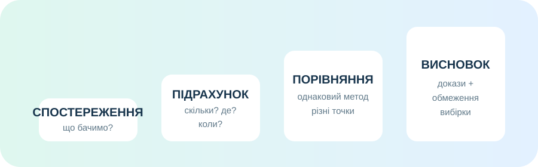
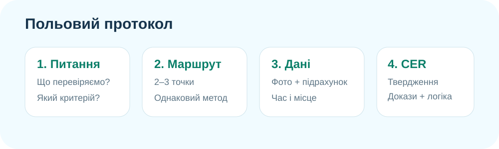

1. Підготовка: що саме ми хочемо дізнатися?
Групове очікування
Оберіть один варіант екскурсії та сформулюйте дослідницьке питання.
Безпека важливіша за дані
У природі: не заходьте на круті схили, у воду, на приватні території; не торкайтеся невідомих рослин, грибів і тварин; не куштуйте знахідки. У музеї: дотримуйтеся правил закладу й не торкайтеся експонатів без дозволу.


2. Сплануйте маршрут до того, як почнете збирати факти
Порядок етапів має бути логічним. Натискайте етапи в правильній послідовності.
Підказка: спочатку визначають, де і що спостерігати, а вже потім пояснюють.
Реальна карта — не декорація
Знайдіть свою місцевість. Для екскурсії у природу оберіть 2–3 доступні точки, які відрізняються умовами: наприклад, біля дороги / у глибині парку / біля водойми. Для музею позначте маршрут до закладу та перевірте навколишні географічні об’єкти.
© OpenStreetMap contributors. Карта створюється спільнотою і доступна за відкритою ліцензією.
3. Польовий протокол: факт ≠ пояснення
Що можна безпосередньо спостерігати?
Позначте ознаки, які Ви справді бачите/чуєте/можете порахувати.
Сила доказу
Розташуйте свої дані у логіці:
- спостереження: що зафіксовано;
- вимірювання/підрахунок: скільки, де, коли;
- порівняння: чим точки відрізняються;
- пояснення: лише після перевірки альтернатив.

Інтерактив: міні-біобліц
Уявіть 10-хвилинне спостереження. Додавайте лише різні групи організмів, які вдалося зафіксувати.
Кількість зафіксованих груп: 0
Це не «індекс біорізноманіття». Це лише стандартизований спосіб не забути різні групи під час короткого спостереження.

4. Доказове завдання: що може довести одна фотографія?
Ситуація: на фото з парку видно мало рослин і витоптаний ґрунт. Учень пише: «У парку низьке біорізноманіття через забруднення повітря».
Коротке відео: як перетворити спостереження на дані
iNaturalist пояснює, що спостереження має поєднувати організм, час і місце. Це зручний приклад громадянської науки.
Відео коротке; за бажанням можна використати iNaturalist після уроку. Публікувати точні координати рідкісних видів без потреби не варто.
5. Теорія — тепер, після діяльності
Екскурсія як географічний метод
Екскурсія — це не просто «вийти з класу». Вона стає дослідженням, коли є питання, маршрут, однаковий спосіб фіксації даних і висновок, що спирається на факти.
Спостереження
Спостереження описує ознаку без пояснення причини: «на ділянці А нараховано 7 видів рослин». Фраза «ділянка А краща» вже потребує критерію.
Музейний експонат як джерело
Експонат набуває наукової цінності разом із контекстом: походженням, датою, місцем знахідки, описом і способом збереження.
Громадянська наука
Сервіси на кшталт iNaturalist дозволяють фіксувати спостереження організмів із часом і місцем, а частина таких даних далі використовується у дослідженнях біорізноманіття.

6. Підсумок CER
Питання: «Чи достатньо даних нашої екскурсії, щоб зробити висновок про стан усієї території?»
7. Домашнє завдання
Завершіть польову/музейну картку: 1 фото або замальовка, місце/назва експоната, 3 фактичні спостереження, 1 вимірювання або підрахунок, 1 обережний висновок і 1 питання, на яке даних поки бракує.
Для повторення використайте електронний підручник та розділ про біосферу/географічні дослідження: електронний підручник географії для 6 класу.